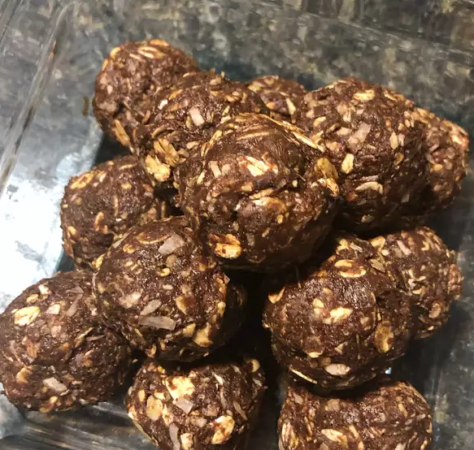

Bliss Balls

Bliss balls are easy to make and can be easily modified. The ones I like best aren't the healthiest. My recipe is as follows:
- Dates
- Peanut Butter
- Dessicated Coconut
- Cacao
- Almonds
- Setup food proccesor
- Add ingrediants one by one to food proccessor, blending between (any order)
- Once all ingrdiants are added, sample mixture
- Add more ingrediants as nessasary to match your tastes
- Roll mixture into balls (about the size of a golfball)
- At this stage you can eat them but it is best ti refridgerate them to help them maintain there form